Ice Breaker:
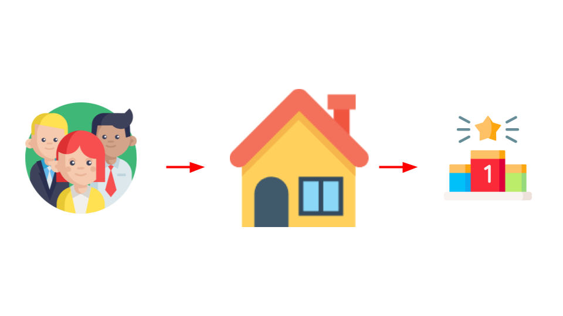
The Goal
We will identify the REAL goals for your website.
How to have that conversation.
Determine what actions you should focus on.
About Me
- I have a decade as a online marketer in Small/Medium size businesses 🎯
- First Half: National brand 🎤
- Second Half: Business Education Company 🌐
- Most of my life as a Volunteer 💬
A lot to cover
Typically these events are often to sell 💰services/packages💰, so they gush on and on about why they're qualified so you can hire them as 'the expert' 🤓.
What we'll be covering (PART 1)
- Some Online Marketing 101 & 201
- Biases and Missed Opportunities
- How to identify your own role
What we'll be covering (PART 2)
- Website and Brand
- Analytics and A/B Testing
- Data and SEO
What I hope you leave with
not this
What I hope you leave with

this
Core Marketing Principles
#1: There's no right answers, only probable answers.
There are no facts. There's only rules of thumb.
For Example:
If I said Postcards are a waste of resources.
Well AK-SHAW-LY:
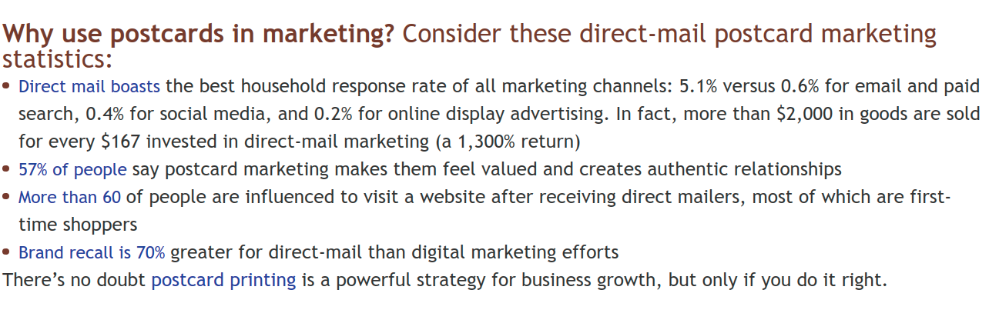Maybe good for non-profits in specific industries? (via https://www.psprint.com/resources/five-pro-tricks-for-marketing-with-postcards/)
#2: Understand the Funnel
Spoiler: Everything is a funnel.
cold, warm & hot leads; 2% conversions; point A to B
#3: Competition
Spoilers: You always have competition
Sherlock Holmes fighting Processor Moriarty
INDUSTRY COMPETITOR
Your competitor is ANYONE WHO DOES WHAT YOU DO.
Example: Doggy daycare Nonprofit
| Analogs | Antilogs |
|---|---|
| Human Daycares exist | Must drop off food |
| There are 3 for-profits in the Valley | Take donations |
| Owners trust experts | Take in rescue dogs |
ATTENTION COMPETITOR
Your competitor is ANYONE WHO TAKES ATTENTION AWAY.
Online Education Competitors:
- Video streaming sites like Hulu or Netflix
- Live Streaming like Twitch
- Youtubers
- Social Media DYI
- Blog Posts
#4: Friction
The barrers that are in-between the 'user' getting to their endpoint.
At Spark Central: Visitor 👉 Activity.
At Library: Visitor 👉 Library Card 👉 Sign up 👉 Activity
At Private After School: Visitor 👉 Application 👉 Background check 👉 Payment 👉 Consideration 👉 Acceptance
#5: Black Hat & White Hat Marketing
Black Hat: Shady/illegal.
White Hat = by the book
What does Black Hat Marketing it look like
- Keyword stuffing, hidden text, content swapping, fake clicks, fake reviews
- Why? Mostly used for quick returns.
- Result? Can be banned from a platform/search engine.
- Actuality? Banning is a irrelevant risk.
What does White Hat Marketing it look like
- Keyword analysis, backlinking, link building, and content for humans
- Why? For long term investments on their website.
- Result? It's what search engines want
- Actuality? No guaranteed results
Good marketing operates in-between
Black Hat & White Hat is decided by the owners of the platform
Sometimes black hat strategies end up becoming white hat
strategies, and vice versa.
If you follow the rules and play it safe, you aren't innovative
and quickly fall behind.
A tale of two Yoga Studios

#6: Goodhart's Law
Tracking and gaming the system 🎲
"When a measure becomes a target, it ceases to be a good measure."
Example: When individuals trying to anticipate the effect of a policy and then taking actions that alter its outcome.
Economist Charles Goodhart
Simulation
I want to increase Facebook likes 👍: LINK
I want to add more visits to my site 📣:LINK
I want to increase my email list 📬: LINK
- #1: THERE'S NO RIGHT ANSWERS, ONLY PROBABLE ANSWERS.
- #2: UNDERSTAND THE FUNNEL
- #3: COMPETITION
- #4: FRICTION
- #5: BLACK HAT & WHITE HAT MARKETING
- #6: GOODHART'S LAW
That was just Marketing Concepts
Let's talk about personal biases
Who loves Pop-ups?

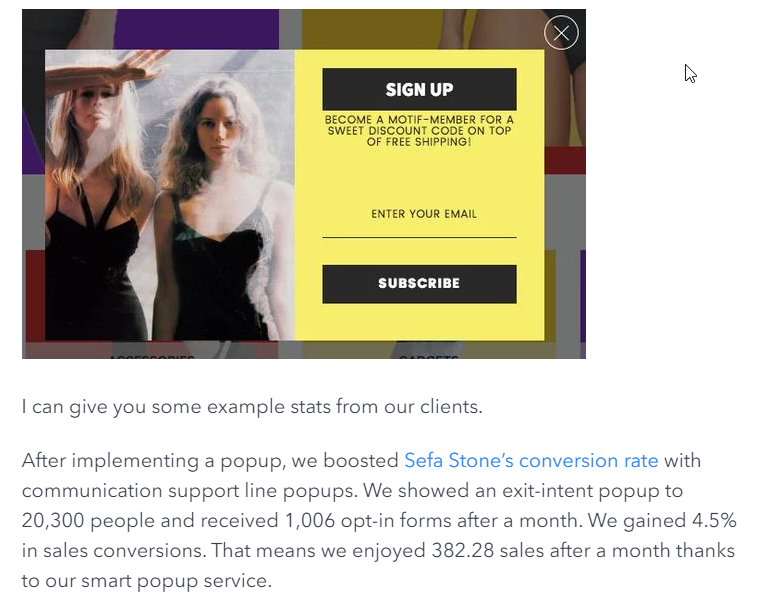 via https://popupsmart.com/blog/why-popups-convert-with-statistics
WHY AND WHY NOT
WHY YOU SHOULD: 10,000 visitors at 2% conversion is 200 emails.
WHY YOU SHOULDN'T: Low visitor count or higher-end visitor.
When I shared the pop-up data, many of you squirmed and still shook your heads no.
Your own biased has blocked you from opportunities.
Marketing is a organization-effort, not a single person. Let me explain:
Identifying Your Role
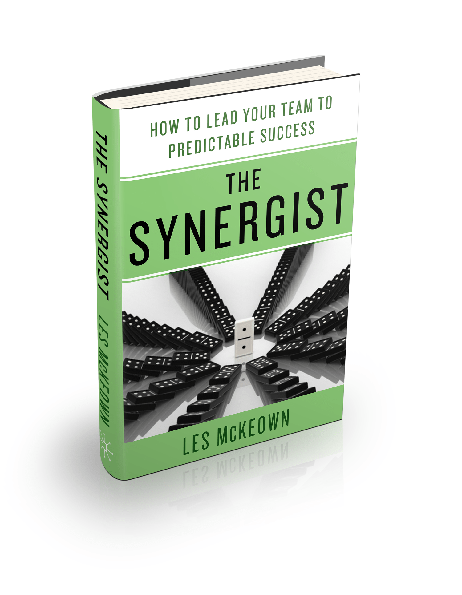All 3 need to work together
All 3 provide checks and balances to the other side.
Why is this important?
Because how I present something can be interpreted in different ways, depending on the type of person you are. (look for the gorilla)
Take 30 seconds to think about:
- What type of biases you have with marketing
- Your Selective attention (ball vs gorilla)
- What bucket you fit in
The next sections
- Website and Brand Identification
- Data and A/B Testing
- Data and SEO
The structure
- What is it 🤔
- The Value 💎
- The Dollar Value 💰
- How to be Successful ✨
- Website and Brand (👈THIS)
- Analytics and A/B Testing
- Data and SEO
What is it 🤔
In the online space - your website is the most important asset. It's the core of everything you do.
The Value💎
- Gives visitors the ability to interact with your organization directly
- Builds relationships with visitors (potential advocates/donors/volunteers)
- Provides information of your mission
- Give updates about your mission
- It contains proof/trust elements about why your cause exists.
How to be Successful ✨
Or really, how to stack the deck in your favor for your website.
#1: Identifying who your site is for
- What type of people are visiting your site?
- Why would they come back to it?
- Why your site vs one of your competitors?
Who are the people (The avatar/persona) visiting your site?
If your site is for everybody, then it's for nobody.
POP QUIZ: What type of people visit Apple's website?

POP QUIZ: Apple.com's visitors?
- Consumers (Mobile devices, watch or computer)
- IT People
- Investors
- Employees
- Manufacturers
The first thing you see on Apple's website:
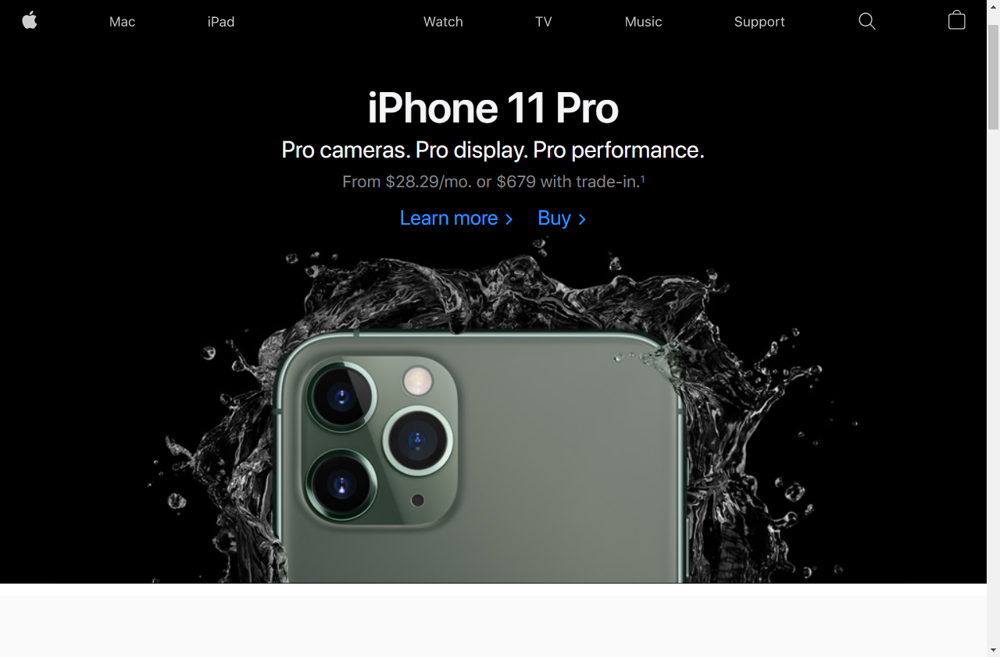Apple.com's visitors?
- Consumers (Mobile Devices, watch or computer)
- IT People
- Investors
- Employees
- Manufacturers
How that identifier looks like on your website
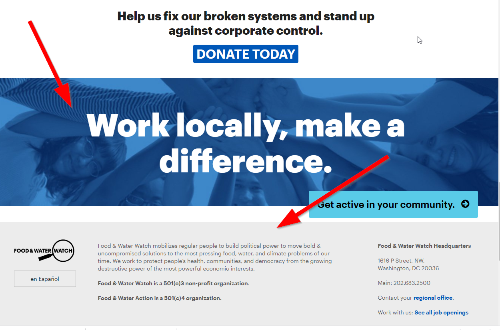Note: Your website's statement could be different from your mission statement.
The Center for Creative Education has provided children and youth arts experiences that enhance their school success by improving critical thinking skills, Today, our Teaching Artists work with thousands of children in schools and in after-school programs throughout the County, as well as at our Center in West Palm Beach, Florida.
https://cceflorida.org/
Seeds of Hope cultivates minds and hearts for Christ by striving to make a transformative Catholic education financially accessible to any family who seeks it.
https://seedsofhopedenver.org/
The Equal Justice Initiative is committed to ending mass incarceration and excessive punishment in the United States, to challenging racial and economic injustice, and to protecting basic human rights for the most vulnerable people in American society.
https://eji.org/about/
We believe that when the buying stops, the killing can too.
https://wildaid.org/about/
We're a nonprofit that makes the world better by being better people providing services for a better tomorrow.
Take a moment to look at your paper? And reflect on your website? Does it align?
#2: Does your site look "trustworthy?"
- Do the visuals represent the visitor?
- Are there trust signals (phone/address, social media)?
- Are there security badges?
3 types of Pages
- Supporting Pages
- About Us, Faq, Board of Directors, your donors, your mission, your visiting hours.
- GOAL: It tells your story. click
- Trust Pages
- Contact us, Privacy Policy, Terms and Conditions. It can also be your Testimonials, Case Studies.
- GOAL: Its proof that you are real and you're doing real changes. click
- Content Pages
- News, Events Listings, Press Release
- GOAL: It's the reason people keep coming to your site.
#3: Your Front Page

#4: Above The Fold

#5: Landing Page
A landing page has a very specific purpose. The goal is to
convert, not to browse.
Example: iPhone11
It can even look/feel different than the main site.
Ads must always point to landing page
#6: Understanding visitors
The Psychology of Why people donate
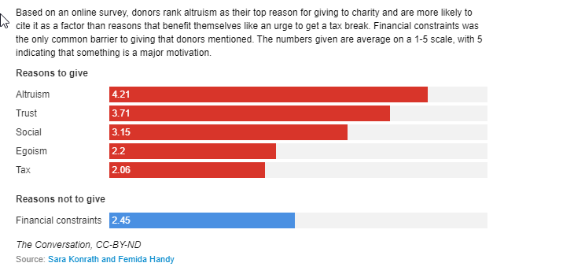You might say: "My organization is actually in a very dry industry."
How to be successful
#1: IDENTIFYING WHO YOUR SITE IS FOR
#2: DOES YOUR SITE LOOK "TRUSTWORTHY?"
#3: YOUR FRONT PAGE
#4: ABOVE THE FOLD
#5: LANDING PAGE
#6: UNDERSTANDING VISITORS
- Website and Brand (✔️)
- Analytics and A/B Testing (👈THIS)
- Data and SEO
What is it 🤔
Taking data about your website visitors and making actions based on it (the A/B Testing)
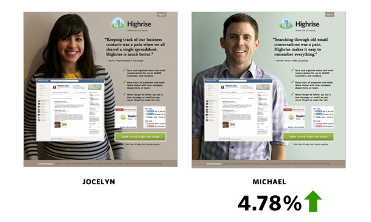The data you gather could be:
The Value💎
Knowing if things are working.
“In God we trust, all others must bring data.”
American Statistician W. Edwards Demin
The Dollar Value💰
Oh, so much.
Data Scientists are making $83k–150k per year(Glassdoor)
https://open.lib.umn.edu/organizationalbehavior/chapter/11-1-decision-making-culture-the-case-of-google/
How to be Successful ✨
Step 1: Get data
Step 2: Make changes and test
Step 3: Go back to step 1
Constant flow of data gathering via Surveys
- On the page survey/Feedback form
- Exit surveys (as visitors leave the site)
- Email Surveys
How do Google Analytics Work
Google Analytics ABCs
- Acquisition
- Behavior
- Conversion
Google Analytics 👉 Acquisition

Most popular page and How they came to the site (Organic, Social, Ads). What demographic (location, language).
Google Analytics 👉 Behavior
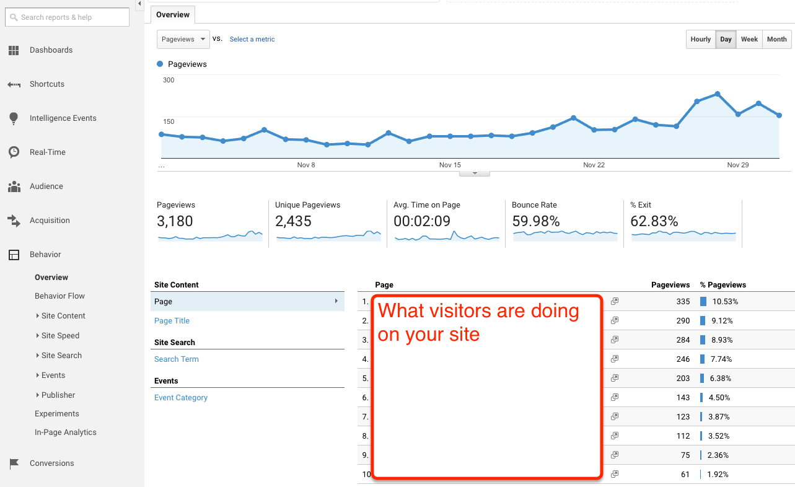How long they stayed on each page. Bounce rate. Exit rate. Popular pages. How they went through the content.
Google Analytics 👉 Conversion

Adding goals and seeing how many trigger it.
Constant testing
In the past 3 years, The wayback machine grabs snapshots of Apple.com about 60 times PER DAY.
Something to note:
This isn't a tomorrow task. However you implement your data gathering & A/B testing strategy. Think in months. 📅
But every day you don't gather is another missed opportunity.
- Website and Brand (✔️)
- Analytics and A/B Testing (✔️)
- Data and SEO (👈THIS)
What is it 🤔
SEO stands for Search Engine Optimization, which is the practice of increasing the quantity and quality of traffic to your website through organic search engine results.
(via Moz.com)
SEO is incredibly misunderstood by many new to the online marketing space.
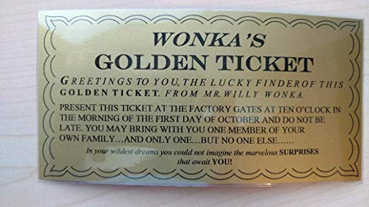SEO determines your search ranking in google.
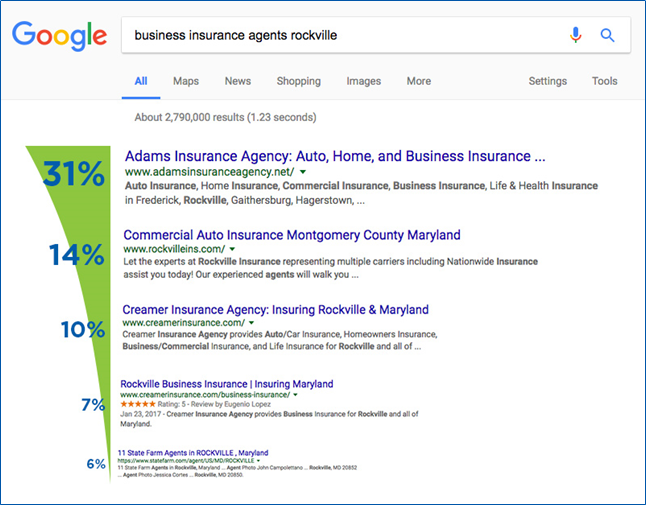
via via
(https://www.bluecorona.com/blog/how-do-i-get-my-business-on-the-first-page-of-google/)
How to beat Google
Google Search Engine product has:
- 2000-3000 engineers/computer scientists working on it
- Has a machine learning algorithm known as Rankbrain
- Listed 21,000 employees who work in R&D, and 7600 employees in Operations. (in 2014)
- Made 3,200 changes to it's Search Algorithm (in 2018 alone!)
The Value💎
- TAKES: Long term investment to increase visibility, branding and traffic.
- REWARD: Search-ability, page visits, inbound-links, reviews/ratings, and increases trust.
The Dollar Value💰
- There's free low-hanging fruit SEO tactics (local SEO, keywords)
- There's low-medium cost content marketing (copywriting, content development)
- There's high cost SEO services/platforms
How to be Successful ✨
Google looks for a few things

#1 User Experience
- Website speed
- Ease of Finding content
(how long a user stays on a page) - Internal Link Structure
- Content Schema
- Whitespace
- Mobile-friendlyness
- Accessibility
- User Intent
User Intent
- Are you generating quality content? (Write for people and what they want.)
- For example: We sell cars. Looking for a car? We sell cars. Cars with 4-wheel drive. Cars with anti-lock breaks. Buy a car now!
- Test this idea.Coping with a dying parent
#2 Trust Factor
- Domain age
- Off-Page SEO
- SSH
- Social Signals
- Business Listing
#3 Linkmap
- Sitemap
- Backlinks
Sitemap
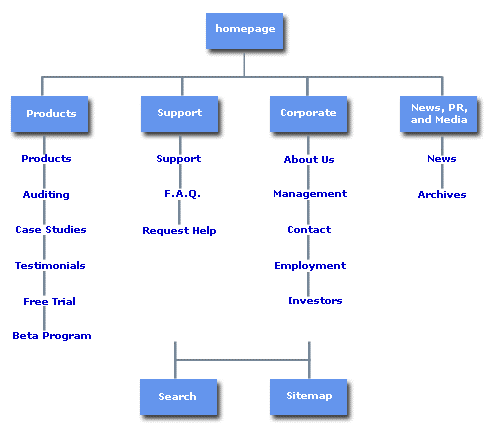Backlinks
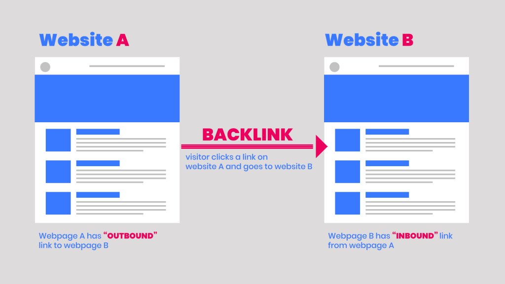Link Juice
It's a mechanism that Google has always used to determine the authority of a web page.
Example: NASA 👉 your site as a resource
gov and .edu sites give a lot of link juice.
Backlinks Strategy (link building)
- Getting a school (.edu) to write about you and your event.
- Getting added on a government website (.gov)
- Listing your events on Event sites/New Sites
- Writing Guest Posts (Your bio)
- Generating Press Releases and shared to news sites
- Creating Youtube videos
- Social Media Conversations*
Being successful with Local SEO
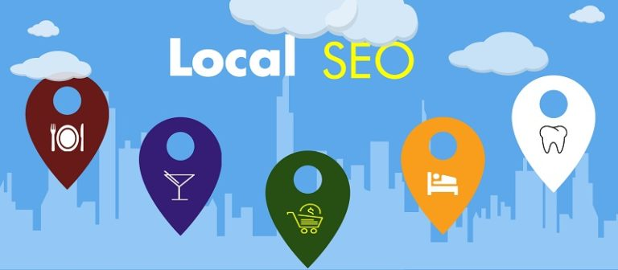1. Set up your Google My Business Account
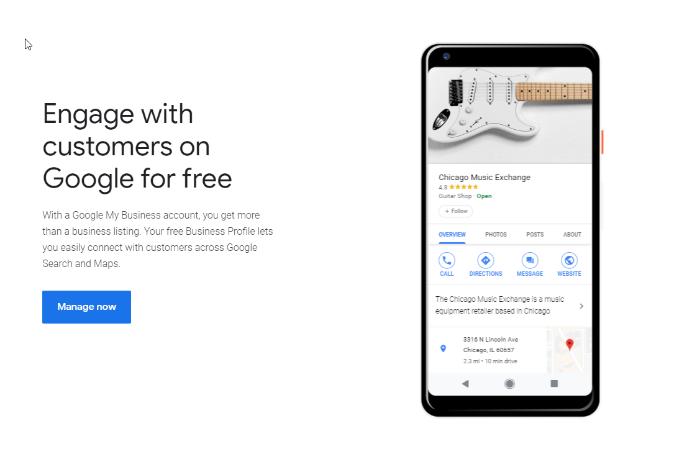1. Set up your Google My Business Account
- Add or claim your organization
- Verify your organization
- Add some photos or videos
- Add additional details like address, business hours, phone number and category in the other sections of your business information.
- Include a summary of your organization
- Monitor the review section and respond to reviews
- Respond to any questions
2. Ensure accurate and consistent information
Spark-Central.org and Spark-Central, and Spark Central are 3 different entities. Stick to the exact same conventions.
3. Manage your listings
Google My Business, Yelp, Bing Places, and Facebook. More.
4. Generating Local content
- On Google Maps, share videos and photos
- Social Media with local content (content 👉 your site)
- Holmes Elementary school event 👉 keywords to tie you to the neighborhood
5. Acquire local backlinks.
- Press releases
- Events
- Newsjacking
Press Releases
- DIY: Finding Journalist emails & news site
- SERVICES: E-release, Newsire, PR underground, PR distribution, CISION, HARO
- TIP: Follow Associate Press Writing style, but jazz it up.
Events
- DIY: Find Event sites, and spend 2-3 hours filling out details.
- SERVICES: None I recommend. Maybe Fiverr?
- TIP: Be Systematic. Don't forget Facebook Events!
Newsjacking
6. Metadata
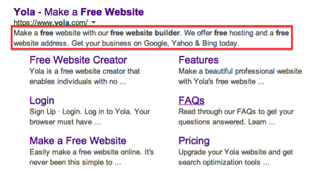Schema
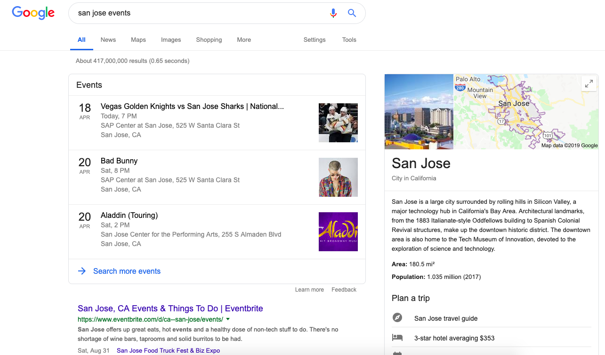7. Get Reviews on Google Maps/Yelp
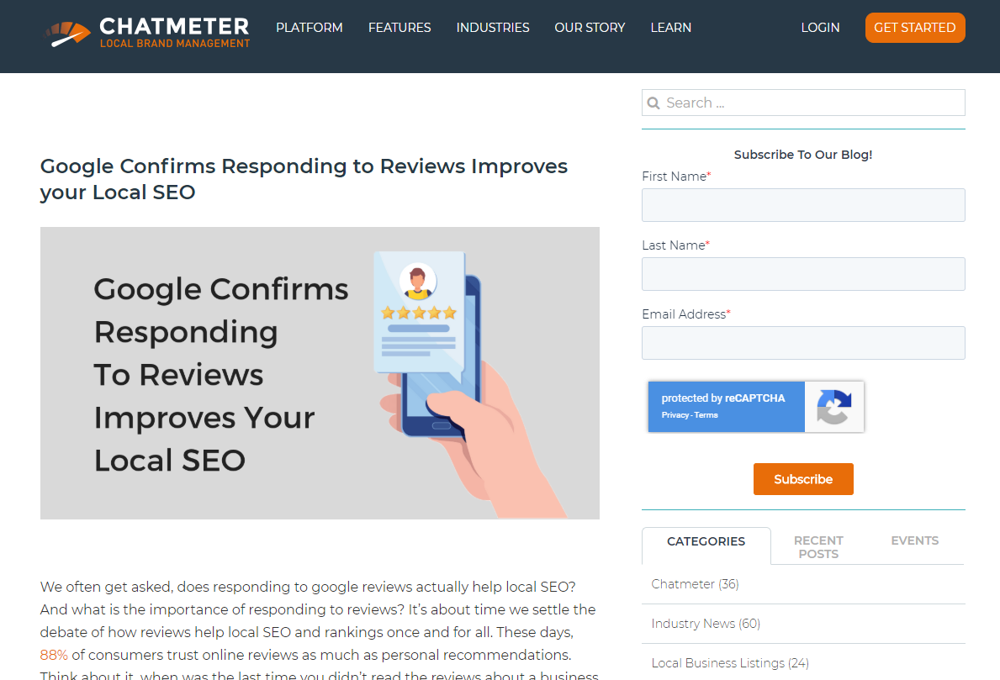Data and SEO
- 1. SET UP YOUR GOOGLE MY BUSINESS ACCOUNT
- 2. ENSURE ACCURATE AND CONSISTENT INFORMATION
- 3. MANAGE YOUR LISTINGS
- 4. GENERATING LOCAL CONTENT
- 5. ACQUIRE LOCAL BACKLINKS.
- 6. METADATA
- 7. GET REVIEWS ON GOOGLE MAPS/YELP
Something to note:
SEO is a long-term investment of time and energy. But the payoff can change your organization.
We're only scratching the surface of the online marketing spectrum.
- Content Marketing
- Ads
- Text Msg
- Email Msg
- Social Media
What I hope you leave with
not this
What I hope you leave with
this